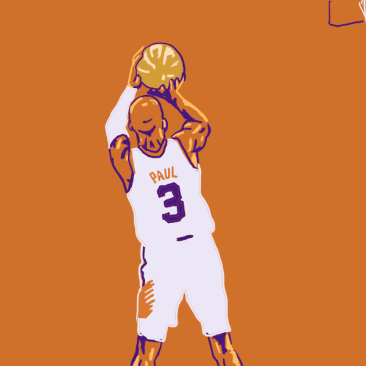

Olá amantes do Basquete! sintam-se em casa. Esse site existe para ser uma forma de expressão de
amor,
tanto do criador, quanto dos usuários para com esse estilo de vida chamado Basquete!

Seja macaco velho ou rookie na quadra, todos temos em comum o conhecimento de que, o basquete é
muito
mais que um esporte.
O Basquete é representatividade, é um símbolo de luta, pode chegar a ser a salvação de algumas pessoas. Desde ser um jeito de passar o tempo, até ser um meio de tirar jovens de uma vida violenta.
Cadastre-se para ter acesso a recomendações de quadras, mostrar quem são seus top 5 da história, saber quais são os jogadores favoritos dos basqueteiros de nossa comunidade. Pode até nos mandar sua própria história com nosso amado basquete!